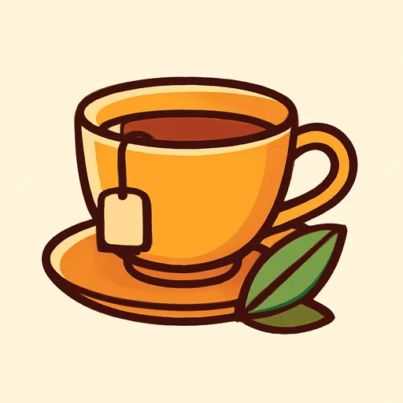
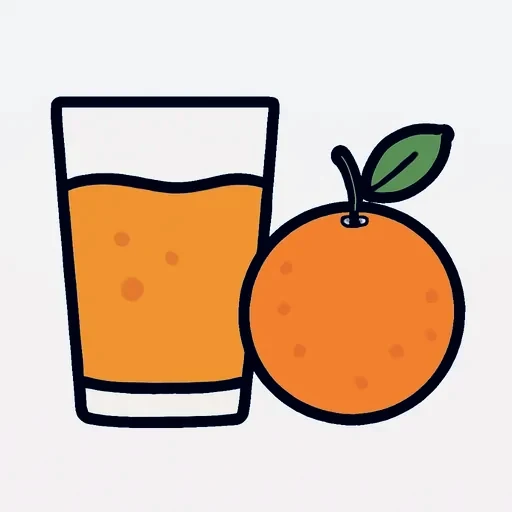
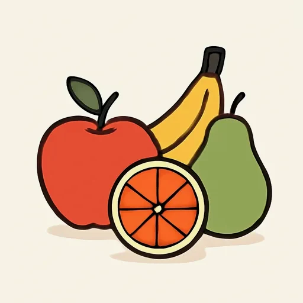
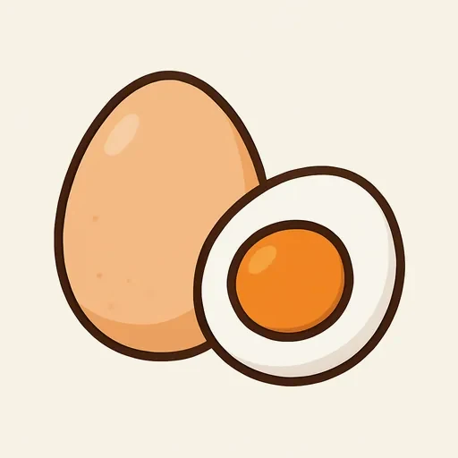
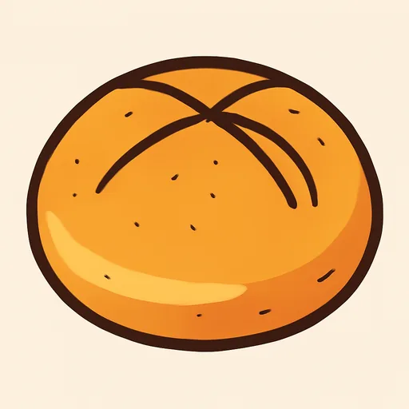

Черновик: урок написан, но преподаватель его ещё не вычитал.
Semana 11 · Día 1 — El desayuno: alimentos y bebidas
Неделя 11 · День 1 — Завтрак: еда и напитки
Сегодня вы научитесь
- называть еду и напитки завтрака и спрашивать «¿Qué desayunas?»;
- пользоваться глаголом tomar, который заменяет и «пить», и «есть»;
- рассказать, что вы едите утром, — и чем это отличается от испанского завтрака.
1. Разминка (0–3 мин)
- Карточки: 10 слов (вчерашние и недельной давности).
- Вопрос по прошлой неделе: ¿A qué hora te levantas los lunes? ¿Y los domingos? Ответьте вслух двумя фразами с a las….
2. Фонетика (3–6 мин)
ll и y — один звук, и он не «ль». Шестая единица полна слов с ll, а русское ухо слышит там мягкое [ль]. В испанском ll читается как y в слове yogur — то есть как русское «й» в «йогурт». Прочитайте вслух и запишите себя:
la mantequilla · la tortilla · el bollo · la botella · la galleta · el pollo · la cebolla · la paella · el yogur
[mantekiˈʝa], не [mantekiˈlʲa]. Проверка: скажите «йогурт» и оставьте тот же звук в mantequilla, tortilla, galleta. Если язык прижимается к зубам — получается русское «ль» и слово звучит по-русски.
3. Новое (6–16 мин)
Пример
Два новых героя на две недели. Paula — из Буэнос-Айреса, Serguéi — из
Казани; они снимают квартиру вместе в Мадриде и по очереди готовят и ходят
есть в бар. Восемь утра, кухня. [AUDIO]
| Español | Русский |
|---|---|
| Paula: Buenos días, Serguéi. ¿Qué desayunas? | Доброе утро, Сергей. Что ты ешь на завтрак? |
| Serguéi: Tomo té con limón y pan con queso. En Kazán desayuno así todos los días. | Пью чай с лимоном и хлеб с сыром. В Казани я так завтракаю каждый день. |
| Paula: ¿Té por la mañana? Yo no tomo té. Tomo un café con leche. | Чай утром? Я чай не пью. Я пью кофе с молоком. |
| Serguéi: ¿Y qué comes? | А что ты ешь? |
| Paula: Una tostada con mantequilla y un zumo de naranja. 🌎 En Buenos Aires, «un jugo de naranja». | Тост с маслом и апельсиновый сок. |
| Serguéi: En Rusia desayunamos más: huevos, salchichas, a veces sopa. | В России мы завтракаем плотнее: яйца, колбаса, иногда суп. |
| Paula: ¡Sopa a las ocho de la mañana! Aquí el desayuno es pequeño: un café y un bollo. | Суп в восемь утра! Здесь завтрак маленький: кофе и булочка. |
| Serguéi: ¿Y la fruta? ¿No tomas fruta? | А фрукты? Фрукты не ешь? |
| Paula: La fruta, de postre. Hoy cocino yo: tortilla de patatas. | Фрукты — на десерт. Сегодня готовлю я: картофельная тортилья. |
Прочитайте диалог вслух за двоих. Посчитайте, сколько раз встречается tomar и сколько — desayunar.
🌎 Paula из Буэнос-Айреса, и в Аргентине вместо tú tomas говорят vos tomás. В этом курсе мы везде берём tú: его понимают во всём испаноязычном мире, и именно его спрашивают на DELE. Поэтому Paula здесь говорит на tú.
Объяснение
Приём пищи и глагол от него. Тут русский работает так же, как испанский: от названия еды образуется глагол.
| Еда | Глагол | Русский | Когда (Испания) |
|---|---|---|---|
| el desayuno | desayunar | завтрак — завтракать | 7:00–9:00, очень маленький |
| la comida 🌎 el almuerzo | comer 🌎 almorzar | обед — обедать | 14:00, главная еда дня |
| la merienda | merendar | перекус днём — перекусывать | 17:00–18:00 |
| la cena | cenar | ужин — ужинать | 21:00–22:00, легкий |
🌎 В Испании главная еда дня — la comida, в большей части Америки — el almuerzo. Обе формы понимают везде.
el desayuno, la comida, la cena, desayunar, cenar и глагол beber вы уже знаете с 9-й недели — сегодня они повторяются. Новое: tomar, названия продуктов и вопрос ¿Qué desayunas?
tomar — универсальный глагол еды и напитков. Правильный, на -ar: tomo, tomas, toma, tomamos, tomáis, toman. Он один закрывает три русских глагола:
Tomo un café. — Я пью кофе. Tomo una tostada. — Я ем тост. Tomo el autobús. — Я езжу на автобусе («беру» автобус).
🌎 В Америке tomar — это прежде всего «пить» (¿Quieres tomar algo?); в Испании он годится и для еды: tomar una tapa, tomar un bocadillo. «Пить» и «есть» по отдельности тоже существуют — beber и comer — но в баре и за столом испанец почти всегда скажет tomar.
Артикль с едой. Два случая, и их надо различать с первого дня:
| Что это | Артикль | Примеры |
|---|---|---|
| Исчисляемое: штука, чашка, порция | un / una | un café, una tostada, un huevo, un bollo, un zumo |
| Неисчисляемое: вещество, «вообще» | без артикля после tomar / desayunar | Tomo café. Desayuno pan con queso. No tomo leche. |
Un café — это чашка кофе; café — кофе как вещество. Поэтому в баре всегда un café, а дома можно и tomo café.
Вопросы дня:
¿Qué desayunas? — Что ты ешь на завтрак? ¿Qué tomas para desayunar? — Что ты берёшь на завтрак? ¿A qué hora desayunas? — Во сколько ты завтракаешь? (структура с прошлой недели)
⚠️ Контраст с русским
- В русском два разных глагола: «пить» чай и «есть» хлеб. И существительное стоит голым: «пью чай», «ем хлеб», «завтракаю кофе с молоком».
- В испанском один глагол tomar на оба случая — и перед исчисляемой едой обязательно стоит un / una. Голое существительное в испанском остаётся редкостью (правило 2-й недели не отменяется в еде).
- Вы захотите сказать: ✗ Desayuno tostada y café. ✗ Como un café. → Правильно: ✅ Desayuno una tostada y un café. ✅ Tomo un café. Приём: если можно посчитать («одна чашка», «один тост») — ставьте un / una; если это вещество («молоко», «хлеб» вообще) — можно без артикля. И не берите comer для напитка: «выпить кофе» — это tomar (или beber, как у Хавьера на 10-й неделе: bebo un café en el bar), но никогда comer.
Что помогает: завтракать / обедать / ужинать = desayunar / comer / cenar. Русский делает глагол из названия еды точно так же, как испанский, — три слова вы получаете бесплатно. А ещё café, té, chocolate, sopa, limón, yogur — международные слова, их не надо учить.
4. Практика (16–26 мин)
Упражнение А. Дополните фразы глаголом desayunar, comer, cenar или tomar в нужной форме.
Модель: Serguéi ___ a las ocho: pan con queso. → desayuna
- Yo ___ a las nueve de la mañana: un café y una tostada.
- En España la gente ___ a las dos: es la comida principal.
- Paula y Serguéi ___ a las diez de la noche.
- ¿Qué ___ tú para desayunar?
- Nosotros ___ un café en el bar de la esquina.
- Serguéi no ___ café: ___ té con limón.
- Vosotros ___ muy tarde, ¿no?
- En Rusia nosotros ___ a la una, no a las dos.
- ¿Vosotros ___ fruta por la mañana?
- Paula ___ un zumo de naranja todos los días.
Упражнение Б. Дополните текст. Банк слов:
el desayuno · desayuna · toma · una tostada · un café con leche · huevos · la fruta · queso · un zumo · pan
El desayuno de Serguéi y el de Paula. En Rusia ______ es grande: ______, ______ con ______ y té. En España es pequeño. Paula ______ a las ocho: ______ con mantequilla, ______ y ______ de naranja. Serguéi no ______ café, toma té. ______, de postre.
Упражнение В. Переведите на испанский.
- Что ты ешь на завтрак? — Тост с сыром и кофе с молоком.
- Я не пью чай утром.
- В Испании обедают в два, а ужинают в десять.
- Мы завтракаем в баре: кофе и булочка.
- Сергей ест яйца и хлеб с сыром.
- Я беру апельсиновый сок, а Паула берёт воду.
- Фрукты — на десерт.
- Во сколько вы ужинаете?
5. Выход (26–29 мин)
Опишите свой завтрак и завтрак испаноговорящего человека — восемь фраз (четыре и четыре). В первых четырёх — вы: во сколько, что пьёте, что едите, каждый день или нет. В следующих четырёх — Paula или Serguéi из диалога (или испанец из воскресного текста 9-й недели).
Yo desayuno a las siete y media. Tomo té con limón y pan con queso. No tomo café por la mañana. Desayuno así todos los días. Paula desayuna a las ocho. Toma un café con leche y una tostada con mantequilla. También toma un zumo de naranja. El desayuno español es pequeño.
Проверьте перед тем, как закрыть тетрадь: перед café, tostada, zumo, bollo стоит un / una?
6. Итог (29–30 мин)
- [ ] Я называю десять продуктов завтрака с артиклем.
- [ ] Я пользуюсь tomar вместо «пить» и «есть».
- [ ] Я могу спросить ¿Qué desayunas? и ответить восемью фразами.
- Добавьте слова дня в колоду — с артиклем. Завтра — главный подарок этого курса: me gusta = мне нравится.
Словарь дня
| Español | Русский | Пример |
|---|---|---|
| tomar | пить; есть; брать | Tomo un café con leche. |
| el pan · la tostada | хлеб · тост | Una tostada con mantequilla. |
| la leche · la mantequilla | молоко · масло | Café con leche y pan con mantequilla. |
 el té |
чай | Serguéi toma té con limón. |
 el zumo 🌎 el jugo |
сок | Un zumo de naranja. |
| la naranja · el limón | апельсин · лимон | Un zumo de naranja. Té con limón. |
 la fruta |
фрукты (собирательно) | La fruta, de postre. |
 el huevo / los huevos |
яйцо / яйца | En Rusia desayunan huevos. |
| el queso · el jamón | сыр · хамон (вяленый окорок) | Un bocadillo de queso y jamón. |
 el bollo |
булочка | Un café y un bollo. |
Ответы
А. 1. desayuno · 2. come · 3. cenan · 4. desayunas (или tomas) · 5. tomamos · 6. toma / toma · 7. cenáis · 8. comemos · 9. tomáis (или desayunáis) · 10. toma.
Б. En Rusia el desayuno es grande: huevos, pan con queso y té. En España es pequeño. Paula desayuna a las ocho: una tostada con mantequilla, un café con leche y un zumo de naranja. Serguéi no toma café, toma té. La fruta, de postre.
В. 1. ¿Qué desayunas? — Una tostada con queso y un café con leche. · 2. Yo no tomo té por la mañana. · 3. En España la gente come a las dos y cena a las diez. · 4. Desayunamos en el bar: un café y un bollo. · 5. Serguéi come huevos y pan con queso. · 6. Yo tomo un zumo de naranja y Paula toma agua. · 7. La fruta, de postre. · 8. ¿A qué hora cenáis?
— Где русский подталкивает к ошибке: в 1 и 4 русский говорит «тост с сыром и кофе» без всего, а испанский требует una tostada и un café; в 2 не забудьте por la mañana (не en la mañana в Испании); в 3 и 8 глагол еды уже содержит смысл «обед» и «ужин», второе слово не нужно: ✗ comer la comida; в 6 agua — слово женского рода, но в единственном числе берёт el и un (el agua fría, un agua): отдельный случай, пока просто запомните его целиком.